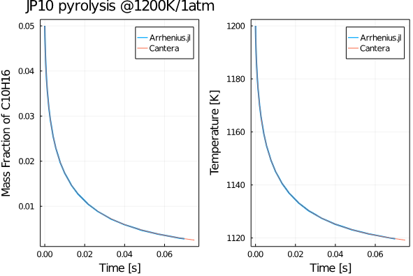

Get Started
Basics and Magic functions!
We first have to make Arrhenius.jl available in our code (along with other packages you might use):
using ArrheniusThe next step is to create the solution structure similar to Cantera by providing a YAML file as the input. The complete definition of the solution structure can be found here.
gas = CreateSolution("../../mechanism/JP10skeletal.yaml")
Note that you have to provide the appropriate location of the YAML file. Here we have in the ../mechanism folder. You can find the number of species and reactions in the mechanism you provided using:
ns = gas.n_species
nr = gas.n_reactions
To view the species that your mechanism uses:
species_arr = gas.species_namesYou might also want to access a particular species' data. For instance, N2's index can be accessed using:
index_N2 = species_index(gas,"N2")To get the molecular weights of each gas:
mol_wt_arr = gas.MWHence the mean molecular weight can be obtained as:
mean_MW = 1. / dot(Y, 1 ./ gas.MW)
#get the density using the ideal gas law
ρ_mass = P / R / T * mean_MWNote that one has to include using LinearAlgebra in the code to be able to use dot(). One can easily convert between the mass and molar fractions:
X = Y2X(gas, Y, mean_MW)
C = Y2C(gas, Y, ρ_mass)Some other commonly used thermodynamic functions are given below:
#molar specific heats
cp_mole, cp_mass = get_cp(gas, T, X, mean_MW)
#molar enthalpies
h_mole = get_H(gas, T, Y, X)
#entropy
S0 = get_S(gas, T, P, X)One of the core functionalities of the Arrhenius.jl is its ability to compute the source term that frequently appears in the governing equations of chemical systems. One can simply compute this using :
w_dot = wdot_func(gas.reaction, T, C, S0, h_mole)Examples
JP10 Pyrolysis
Let us compute the evolution of the mass fractions of C10H16 species as JP-10 is subjected to isobaric pyrolysis at 1 atm and an initial temperature of 1200K. We first include all our packages:
using Arrhenius
using LinearAlgebra
using DifferentialEquations
using ForwardDiff
using DiffEqSensitivity
using Plots
using DelimitedFiles
using ProfileThen create the gas object:
gas = CreateSolution("../../mechanism/JP10skeletal.yaml")Declare the initial conditions as arrays:
Y0 = zeros(ns)
Y0[species_index(gas, "C10H16")] = 0.05
Y0[species_index(gas, "N2")] = 0.95
T0 = 1200.0 #K
P = one_atm
u0 = vcat(Y0, T0);Create a function to define the ODE problem (for more details on solving differential equations refer to DifferentialEquations.jl.
@inbounds function dudt!(du, u, p, t)
T = u[end]
Y = @view(u[1:ns])
mean_MW = 1. / dot(Y, 1 ./ gas.MW)
ρ_mass = P / R / T * mean_MW
X = Y2X(gas, Y, mean_MW)
C = Y2C(gas, Y, ρ_mass)
cp_mole, cp_mass = get_cp(gas, T, X, mean_MW)
h_mole = get_H(gas, T, Y, X)
S0 = get_S(gas, T, P, X)
wdot = wdot_func(gas.reaction, T, C, S0, h_mole)
Ydot = wdot / ρ_mass .* gas.MW
Tdot = -dot(h_mole, wdot) / ρ_mass / cp_mass
du .= vcat(Ydot, Tdot)
endSolve the ODE problem:
tspan = [0.0, 0.07];
prob = ODEProblem(dudt!, u0, tspan);
sol = solve(prob, TRBDF2(), reltol=1e-6, abstol=1e-9);Great! Let us now compare our solution with cantera by first loading the cantera data:
cantera_data = readdlm("pyrolysis.dat")
ct_ts= cantera_data[:, 1]
ct_T = cantera_data[:, 2]
ct_Y = cantera_data[:, 3:end];Now plot and compare away:
plt = plot(sol.t, sol[species_index(gas, "C10H16"), :], lw=2, label="Arrhenius.jl");
plot!(plt, ct_ts, ct_Y[:, species_index(gas, "C10H16")], label="Cantera")
ylabel!(plt, "Mass Fraction of C10H16")
xlabel!(plt, "Time [s]")
pltT = plot(sol.t, sol[end, :], lw=2, label="Arrhenius.jl");
plot!(pltT, ct_ts, ct_T, label="Cantera")
ylabel!(pltT, "Temperature [K]")
xlabel!(pltT, "Time [s]")
title!(plt, "JP10 pyrolysis @1200K/1atm")
pltsum = plot(plt, pltT, legend=true, framestyle=:box)You should get a plot something like this:

Sensitivity analysis using Julia's DiffEqSensitivity.jl
In the previous example, we can easily perform a sensitivity analysis using Julia's DiffEqSensitivity.jl:
sensealg = ForwardDiffSensitivity()
alg = TRBDF2()
# alg = Tsit5()
function fsol(u0)
sol = solve(prob, u0=u0, alg, tspan = (0.0, 7.e-2),
reltol=1e-3, abstol=1e-6, sensealg=sensealg)
return sol[end, end]
end
u0[end] = 1200.0 + rand()
println("timing ode solver ...")
@time fsol(u0)
@time fsol(u0)
@time ForwardDiff.gradient(fsol, u0)The results are quite promising, with sensitivity computed in less than 2 seconds!
julia>timing ode solver ...
0.405083 seconds (614.32 k allocations: 45.126 MiB)
0.036229 seconds (16.72 k allocations: 11.618 MiB)
1.517267 seconds (183.25 k allocations: 864.085 MiB, 7.46% gc time)Exploiting Julia's Auto-Differentiation (AD) package to compute Jacobians
Julia's automatic differentiation packages like ForwardDiff.jl can be exploited thoroughly using Arrhenius.jl to compute the Jacobian that frequently pops up while integrating stiff systems in chemically reactive flows. We present to you an example using the LiDryer 9-species H2 combustion mechanism. So let's import packages:
using Arrhenius
using LinearAlgebra
using DifferentialEquations
using ForwardDiff
using DiffEqSensitivity
using Plots
using DelimitedFiles
using ProfileNext input the YAML:
gas = CreateSolution(".../../mechanism/LiDryer.yaml")We use a 9-species + 24-reaction model:
julia> ns = gas.n_species
9
julia> ns = gas.n_species
24View the participating species:
julia> gas.species_names
9-element Array{String,1}:
"H2"
"O2"
"N2"
"H"
"O"
"OH"
"HO2"
"H2O2"
"H2O"Let's set the initial conditions:
Y0 = zeros(ns)
Y0[species_index(gas, "H2")] = 0.055463
Y0[species_index(gas, "O2")] = 0.22008
Y0[species_index(gas, "N2")] = 0.724457 #to sum as unity
T0 = 1100.0 #K
P = one_atm * 10.0
u0 = vcat(Y0, T0);Create the differential function:
function dudt(u)
T = u[end]
Y = @view(u[1:ns])
mean_MW = 1. / dot(Y, 1 ./ gas.MW)
ρ_mass = P / R / T * mean_MW
X = Y2X(gas, Y, mean_MW)
C = Y2C(gas, Y, ρ_mass)
cp_mole, cp_mass = get_cp(gas, T, X, mean_MW)
h_mole = get_H(gas, T, Y, X)
S0 = get_S(gas, T, P, X)
wdot = wdot_func(gas.reaction, T, C, S0, h_mole)
Ydot = wdot / ρ_mass .* gas.MW
Tdot = -dot(h_mole, wdot) / ρ_mass / cp_mass
du = vcat(Ydot, Tdot)
endNow computing the jacobian w/ref to the initial condition vector is as simple as:
julia> @time du0 = ForwardDiff.jacobian(dudt, u0)
0.026856 seconds (18.37 k allocations: 1.047 MiB)
10×10 Array{Float64,2}:
-0.00227393 -0.000934232 0.000137514 … 0.000213839 -5.21262e-6
-0.0360919 -0.0148282 0.00218263 0.00334244 -8.27348e-5
0.0 0.0 0.0 0.0 0.0
0.00113697 0.000467116 -6.87571e-5 -0.000106919 2.60631e-6
2.09985e-12 2.28459e-12 -1.26987e-13 2.97389e-12 2.53222e-14
0.0 0.0 0.0 … 2.74378e-5 0.0
0.0372289 0.0152953 -0.00225138 -0.00344774 8.53411e-5
0.0 0.0 0.0 0.0 0.0
0.0 0.0 0.0 -2.9064e-5 0.0
-27.3692 -47.4374 16.5061 29.0894 -0.306451Auto-ignition
Here we use the GRI30 methane combustion mechanism to compute the ignition delay time of a premixed methane-air mixture @ 980K/15 atm. The implementation is quite similar. Let's say you want to set ICs in-terms of the mole-fractions, one may eventually convert them to mass-fractions as follows:
X0 = zeros(ns);
X0[species_index(gas, "CH4")] = 1.0 / 2.0
X0[species_index(gas, "O2")] = 1.0
X0[species_index(gas, "N2")] = 3.76
X0 = X0 ./ sum(X0);
Y0 = X2Y(gas, X0, dot(X0, gas.MW));The integrator function remains the same:
u0 = vcat(Y0, T0)
@inbounds function dudt!(du, u, p, t)
T = u[end]
Y = @view(u[1:ns])
mean_MW = 1.0 / dot(Y, 1 ./ gas.MW)
ρ_mass = P / R / T * mean_MW
X = Y2X(gas, Y, mean_MW)
C = Y2C(gas, Y, ρ_mass)
cp_mole, cp_mass = get_cp(gas, T, X, mean_MW)
h_mole = get_H(gas, T, Y, X)
S0 = get_S(gas, T, P, X)
wdot = wdot_func(gas.reaction, T, C, S0, h_mole)
Ydot = wdot / ρ_mass .* gas.MW
Tdot = -dot(h_mole, wdot) / ρ_mass / cp_mass
du .= vcat(Ydot, Tdot)
endWe then integrate using DifferentialEquations.jl
tspan = [0.0, 0.1];
prob = ODEProblem(dudt!, u0, tspan);
@time sol = solve(prob, CVODE_BDF(), reltol = 1e-6, abstol = 1e-9)After running ignition.jl you should get a plot as follows: 
Sensitivity analysis of ignition delay times-Active subspaces
Perfect Stirred reactor
One may refer to the NN-PSR repo